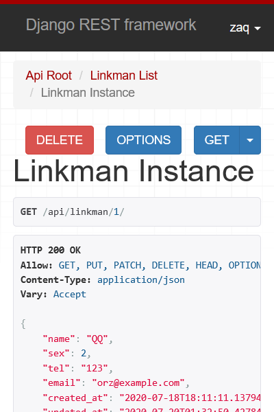
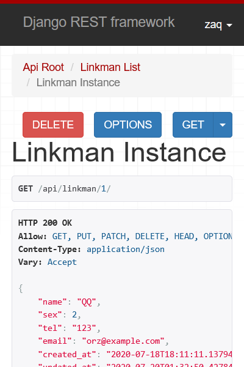

這次作為複習，利用djangorestframework製作一個陽春的REST API 何謂RESTful就不贅述了，直接開始實做
code放在一樣放在GitHub上 https://github.com/mikanbearer/django_rest_example
環境大概是以下這樣
$ python --version
Python 3.8.4
$ pip list
...
Django 3.0
djangorestframework 3.11.0
初期的幾個指令
django-admin startproject django_rest_example
cd django_rest_example
python manage.py startapp api
python manage.py migrate
完成後的樹狀圖
.
│ db.sqlite3
│ manage.py
│
├─django_rest_example
│ │ asgi.py
│ │ settings.py
│ │ urls.py
│ │ wsgi.py
│ │ __init__.py
│ │
│ └─__pycache__
│ settings.cpython-36.pyc
│ urls.cpython-36.pyc
│ __init__.cpython-36.pyc
│
└─api
│ admin.py
│ apps.py
│ models.py
│ tests.py
│ views.py
│ __init__.py
│
├─migrations
│ __init__.py
│
└─__pycache__
__init__.cpython-36.pyc
settings.py追加剛才建立的app
|
|
追加以下設定，可以指定一頁最多幾個object
|
|
修改models.py
|
|
使用以下兩個指令生成migration並建立table
python manage.py makemigrations
python manage.py migrate
接下來建立關鍵的Serializer，就之於html用的forms，在使用json的情況下則是用serializers來進行序列化， 和ModelForm不同的是，serializer也會用於view的response
|
|
接下來就是處理view了，雖然一般會用以下的寫法
class LinkmanList(APIView):
def get(self, request, format=None):
...
def post(self, request, format=None):
...
class LinkDetail(APIView):
def get(self, request, pk, format=None):
...
def put(self, request, pk, format=None):
...
def delete(self, request, pk, format=None):
...
和相應的urlpattern urls.py也能用以下寫法
urlpatterns = [
path('', views.LinkmanList.as_view()),
path('<int:pk>/', LinkmanDetail.as_view()),
]
但為了求快，view直接選擇可使用多種method的viewsets，而urlpattern選用routers
|
|
使用router的urls如下
|
|
既然viewsets已經包含了這麼多method，那現在的pattern到底會是怎樣呢？其實可以從router一窺究竟, 使用django shell
python manage.py shell
照剛才的寫法，這就是urlpatterns中「''」include的內容
>>> from api import urls
>>> urls.router.__dict__
{'root_renderers': [<class 'rest_framework.renderers.JSONRenderer'>, <class 'rest_framework.rende
rers.BrowsableAPIRenderer'>], 'trailing_slash': '/', 'registry': [('linkman', <class 'api.views.L
inkmanViewSet'>, 'linkman')], '_urls': [<URLPattern '^linkman/$' [name='linkman-list']>, <URLPatt
ern '^linkman\.(?P<format>[a-z0-9]+)/?$' [name='linkman-list']>, <URLPattern '^linkman/(?P<pk>[^/
.]+)/$' [name='linkman-detail']>, <URLPattern '^linkman/(?P<pk>[^/.]+)\.(?P<format>[a-z0-9]+)/?$'
[name='linkman-detail']>, <URLPattern '^$' [name='api-root']>, <URLPattern '^\.(?P<format>[a-z0-
9]+)/?$' [name='api-root']>]}
project的urls.py要記得include app的urls.py，接下來就大功告成
|
|
一樣用runserver這個指令來啟動WSGI
python manage.py runserver
因為permission有指定IsAuthenticated，所以沒有加上user:password的話會失敗
$ curl http://127.0.0.1:8000/api/linkman/
{"detail":"Authentication credentials were not provided."}
post
$ curl http://127.0.0.1:8000/api/linkman/ -u admin:123 -X POST -H 'Content-Type: application/json'
\ -d '{"name":"orz","sex":1,"tel":"123","email":"qq@qq.qq"}'
{"name":"orz","sex":1,"tel":"123","email":"qq@qq.qq","created_at":"2020-07-18T18:11:11.137940Z","updated_at":"2020-07-18T18:48:53.737802Z"}
get
$ curl http://127.0.0.1:8000/api/linkman/ -u admin:123
[{"name":"orz","sex":1,"tel":"123","email":"qq@qq.qq","created_at":"2020-07-18T18:11:11.137940Z","updated_at":"2020-07-18T18:48:53.737802Z"}]
get detail
$ curl http://127.0.0.1:8000/api/linkman/1/ -u admin:123
{"name":"orz","sex":1,"tel":"123","email":"qq@qq.qq","created_at":"2020-07-18T18:11:11.137940Z","updated_at":"2020-07-18T18:52:39.098101Z"}
put
$ curl http://127.0.0.1:8000/api/linkman/ -u admin:123 -X POST -H 'Content-Type: application/json'
\ -d '{"name":"orz","sex":1,"tel":"123","email":"qq@qq.qq"}'
{"name":"orz","sex":1,"tel":"123","email":"qq@qq.qq","created_at":"2020-07-18T18:11:11.137940Z","updated_at":"2020-07-18T18:48:53.737802Z"}
patch
$ curl http://127.0.0.1:8000/api/linkman/ -u admin:123 -X POST -H 'Content-Type: application/json'
\ -d '{"sex":2}'
{"name":"orz","sex":2,"tel":"123","email":"qq@qq.qq","created_at":"2020-07-18T18:11:11.137940Z","updated_at":"2020-07-18T18:52:53.737802Z"}
也有web可以提供使用

 
